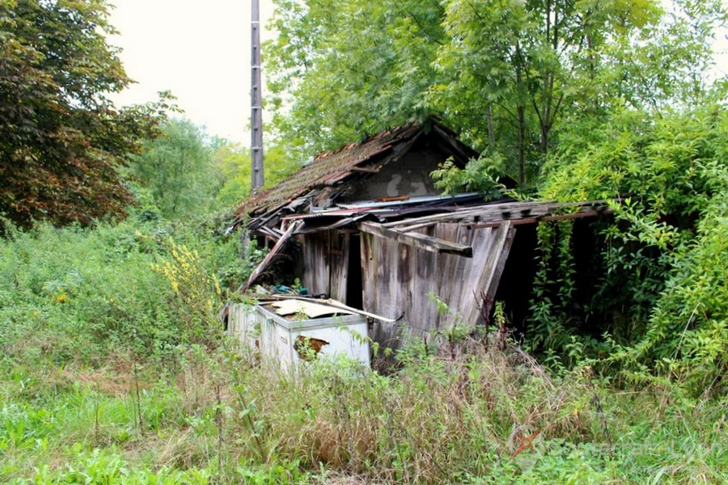
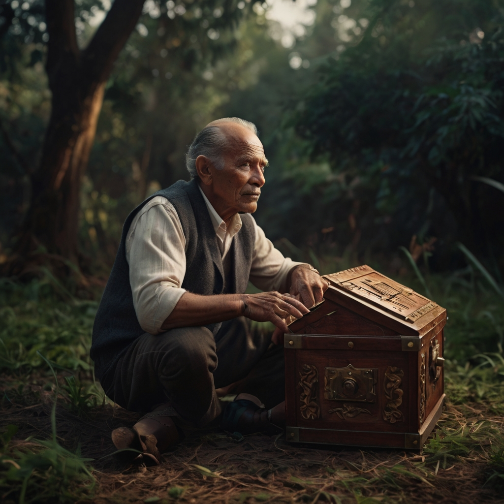
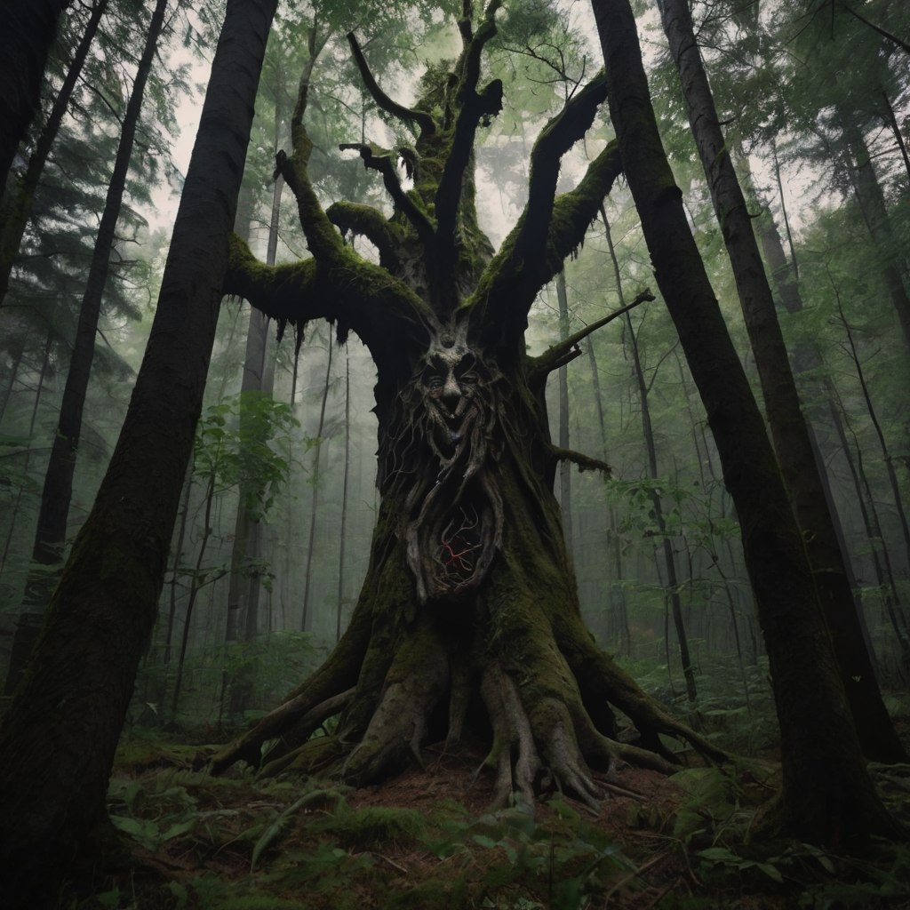
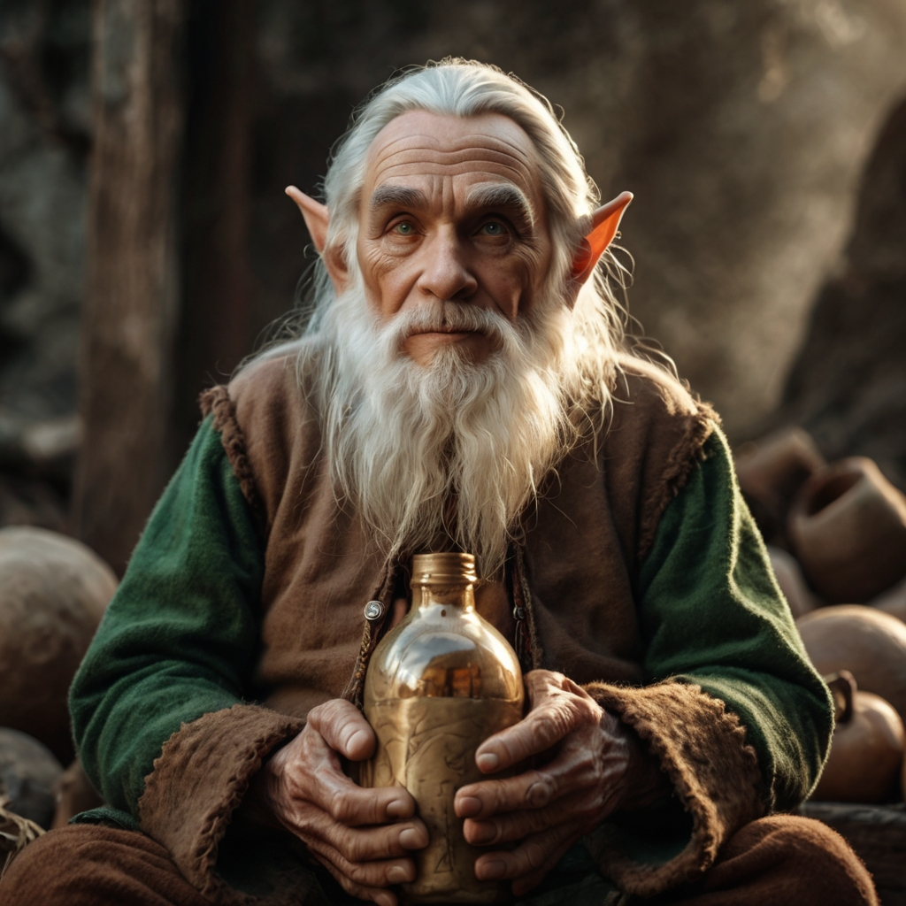

Voce um nobre aventureiro, se perde na floresta apos procurar por um monstro que havia se instalado na região, depois de caminhar um pouco voce encontra um rio, sorte voce esta com muita sede!.
voce se delicia com a agua fresca
você morre, a agua estava estranha.

depois de uns minutos andando, voce nota que há muito sangue no chão a frente, mas nenhum corpo
após um tempo examinando você presencia uma agitacão nos arbustos, oque eu faço!!!!
um monstro parecendo um fantasma-vampiro de uns 3 metros aparece, voce esta tao nervoso que nao consegue se mexer!,ele te faz a seguinte pergunta com a condição de te deixar vivo se acertar a resposta, QUAL O MEU NOME HUMANO!!!!!?????
ele te come da cabeça aos pés...
ele sorri e aperta sua mão, com um sorriso no rosto te entrega uma chaave velha e desaparece.
ele alem de abusar de voce, ele suga sua energia vital.
ele te mata, burro!
Retornando e escolhendo o rio à esquerda, você encontra uma cachoeira escondida e algumas inscrições.
voce decide entrar, e encontra um bau misterioso muito bem trancado
voce posiciona a chave e ela gira sozinha, dentro dela cai uma espada nomeada de excalibur
voce volta e o mata fantasma-vampiro, ele desaparece o amaldiçoando
após um tempo descendo o rio você se depara com uma silhueta caida no chão, oque fazer?
voce percebe que é uma mulher, ela ao te ver pede ajuda com a voz tremula

voce vai ajuda-la, porem, ela se transforma em uma manticora e te ataca
voce decide nao ajuda-la e vai em direção oposta a ela, nisso voce encontra uma cabana abandonada
voce entra e se depara com um machado a mesa
voce decide sair dali quando um ogro aparece, voce indefeso agoniza quieto
voce decide sair dali quando um ogro aparece, com seu machado em mãos voce o mata
voce retorna triunfante e o povoado comemora sua vitoria!
após um tempo de ter atravessado o rio você se depara com uma silhueta caida no chão, oque fazer?
voce percebe que é uma elfa mulher
voce vai abusa-la, porem, ela diz que foi um teste e te mata sem rancor nenhum
voce decide mata-la e vai em direção a ela, nisso ela se levanta dizendo que era um teste, "voce matou aquele ogro nos ajude!!!" e humildemente pede sua ajuda para matar um trant perverso que havia se instalado em sua aldeia
voce recusou, ela com o olhar frio diz procurar alguem de coragem e nao um fracote como tu!
voce volta de onde veio, as pessoas te olham com instisfação, voce fica sabendo que uma vila no meio da floresta foi destruda e fica com o remorso pro resto da vida
voce decide que vai ajudar ela, nisso, de repente voce ve que uma barreira se desfez em volta de tu, voce ja estava na aldeia
voce decide explorar a adeia, nisso, furtivamente voce furta os tesouros e esconde um local seguro ate voce voltar
a elfa te leva ate o chefe dela, um velho sabio da regiao, ele fornece dados especficos sobre o trant, tamanho, um mapa, comprimento e como derrota-lo

ao sair ele te chama denovo, e te da um litro de saque

voce diz que nao bebe e joga de volta o fraco da bebida
depois de uma bos caminhada sua visao embaraça voce esta com sono e deita no pe de uma arvore
voce esta realmete cansado e decide dormir um pouco, porem aquela arvore é o treant que voce procurava ele te comeu vivo e destruiu a vila
voce se estapeja, logo ve que aquela arvore é o trant, a arvore é seca, quem dera tivesse aquele saque.... ele te comeu vivo e destruiu a vila
voce aceita e segue seu rumo
depois de uma bos caminhada sua visao embaraça voce esta com sono e deita no pe de uma arvore
voce esta realmete cansado e decide dormir um pouco, porem aquela arvore é o treant que voce procurava ele te comeu vivo e destruiu a vila
voce se estapeja, logo ve que aquela arvore é o trant, a arvore é seca, voce joga todo o saque nela e faz uma faisca com seu machado, ele pega fogo deslumbrantemente
voce volta a aldeia e é recebido por uma grande festa, logo o ancião te faz a seguinte proposta, "se voce ficar se casara com qualquer elfa que aqui exista e govenara a proxima linhagem"
voce fica na aldeia, sua ideia de representante nao agrada muito os moradores mas voce nao liga e tem diversas elfas interessadas em voce
voce volta para o seu povoado, com o tesouro roubado voce entra na burguesia e desfruta do melhor pro resto da vida